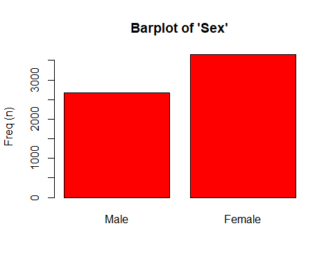
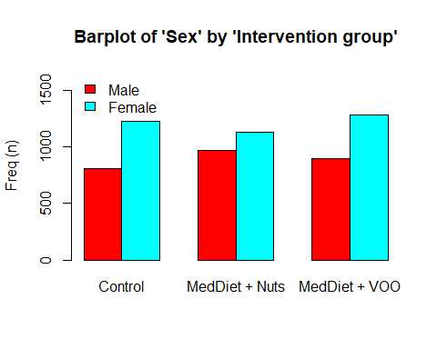

9 Creación y personalización de tablas descriptivas
9.1 Introducción
Tal y como hemos visto en este curso, en muchos estudios biomédicos necesitamos llevar a cabo análisis descriptivos y de asociación para muchas variables con la intención de crear (a mano) tablas como esta que se pueden encontrar en los artículos científicos:

Baseline comparisons of a case control study
Odds ratio summarization of main risk factors
Estos análisis se hacen con las mismas instrucciones de R y esto puede ser tedioso. Además copiar y pegar los resultados en una tabla puede llevar a errores. Finalmente, tener que volver a crear la tabla porque los datos han sido depurados o se han eliminado/añadido casos también puede conllevar a una pérdida de tiempo innecesaria.
Para evitar estos problemas, podemos usar la librería
compareGroups que está accesible en R y que podemos instalar mediante:
Esta librería consiste en tres funciones clave:
compareGroups (): genera los cálculoscreateTable (): crea la tabla descriptiva creada concompareGroups (). Se puede customizar excluyendo categorías de las variables, cambiando el número de decimales, etc.export2... (): exporta las tablas a EXCEL, Word, LaTeX, Rmarkdown, etc.
Para ilustrar cómo realizar nuestros análisis usando compareGroups utilizaremos una base de datos del estudio PREDIMED que es un estudio longitudinal que contiene distintas variables iniciales de los participantes, así como eventos ocurridos durante un período de seguimiento de 7 años (variables event y tevent). Cada individuo ha sido asignado a una dieta de tres intervenciones al azar (variable group).
Los datos están accesibles con la librería y se pueden cargar tras cargar la libería con:
Las variables son:
group sex age smoke bmi waist wth htn
1 Control Male 58 Former 33.53 122 0.7530864 No
2 Control Male 77 Current 31.05 119 0.7300614 Yes
4 MedDiet + VOO Female 72 Former 30.86 106 0.6543210 No
5 MedDiet + Nuts Male 71 Former 27.68 118 0.6941177 Yes
6 MedDiet + VOO Female 79 Never 35.94 129 0.8062500 Yes
8 Control Male 63 Former 41.66 143 0.8033708 Yes
diab hyperchol famhist hormo p14 toevent event
1 No Yes No No 10 5.374401 Yes
2 Yes No No No 10 6.097194 No
4 Yes No Yes No 8 5.946612 No
5 No Yes No No 8 2.907598 Yes
6 No Yes No No 9 4.761123 No
8 Yes Yes No <NA> 9 3.148528 Yes9.2 Estadísticas descriptivas y tests estadísticos
Seleccionamos las varialbes y los métodos
Calculamos todos los descriptivos y las pruebas de hipótesis de las variables seleccionadas mediante la función compareGroups ().
Las variables se seleccionan haciendo uso del entorno de fórmulas estándar R. Las variables descritas se colocan en al lado derecho de ~ separadas por el signo +, mientras que la variable que indica los grupos se coloca en el lado izquierdo de la fórmula. Para seleccionar todas las variables podemos usar . y para eliminar variables, -.
Debemos tener en cuenta que no se permiten transformaciones en el entorno de fórmulas. Si es necesario, deben realizarse antes de llamar a la función compareGroups ().
Cada variable es descrita en función del tipo (numérica o categórica). El argumento method fuerza a que los análisis de una variable se haga asumiendo que la variable es:
- method = 1 normalmente distribuida;
- method = 2 continua no normal;
- method = 3 variable categórica; y
- method = NA, lleva a cabo un test de normalidad y decide si la variable es normal o no (valor por defecto).
Así, si quisiéramos describir todas (.) las variables de nuestros datos menos la variable toevent (- toevent) y que el programa decidiera qué variables son normales o no (method = NA) excepto para la variable wtn y p14 que queremos que se reporten con la mediana y los cuartiles en vez de la media y desviación estandard, ejecutaríamos
-------- Summary of results by groups of 'Intervention group'---------
var N p.value
1 Sex 6324 <0.001**
2 Age 6324 0.003**
3 Smoking 6324 0.444
4 Body mass index 6324 <0.001**
5 Waist circumference 6324 0.045**
6 Waist-to-height ratio 6324 <0.001**
7 Hypertension 6324 0.249
8 Type-2 diabetes 6324 0.017**
9 Dyslipidemia 6324 0.423
10 Family history of premature CHD 6324 0.581
11 Hormone-replacement therapy 5661 0.850
12 MeDiet Adherence score 6324 <0.001**
13 AMI, stroke, or CV Death 6324 0.064*
method selection
1 categorical ALL
2 continuous normal ALL
3 categorical ALL
4 continuous normal ALL
5 continuous normal ALL
6 continuous normal ALL
7 categorical ALL
8 categorical ALL
9 categorical ALL
10 categorical ALL
11 categorical ALL
12 continuous non-normal ALL
13 categorical ALL
-----
Signif. codes: 0 '**' 0.05 '*' 0.1 ' ' 1 En esta tabla vemos el número de indiviudos sin valores faltantes (missings) para cada variable, el p-valor correspondiente al test de normalidad y el tipo de variable que considera para el análisis.
Mostrar resultados
Si queremos ver las descriptivas de cada variable, basta con usar la función summary (). Veamos esta descriptiva para las dos primeras variables
--- Descriptives of each row-variable by groups of 'Intervention group' ---
-------------------
row-variable: Sex
Male Female Male% Female% p.overall
[ALL] 2679 3645 42.36243 57.63757
Control 812 1230 39.76494 60.23506 8.1e-05
MedDiet + Nuts 968 1132 46.09524 53.90476
MedDiet + VOO 899 1283 41.20073 58.79927
p.trend p.Control vs MedDiet + Nuts
[ALL]
Control 0.388386 0.000133
MedDiet + Nuts
MedDiet + VOO
p.Control vs MedDiet + VOO
[ALL]
Control 0.358324
MedDiet + Nuts
MedDiet + VOO
p.MedDiet + Nuts vs MedDiet + VOO
[ALL]
Control 0.002076
MedDiet + Nuts
MedDiet + VOO
-------------------
row-variable: Age
N mean sd lower upper
[ALL] 6324 67.0117 6.17499 66.85948 67.16392
Control 2042 67.34231 6.27992 67.06977 67.61485
MedDiet + Nuts 2100 66.6819 6.016395 66.42444 66.93937
MedDiet + VOO 2182 67.01971 6.212578 66.75889 67.28052
p.overall p.trend p.Control vs MedDiet + Nuts
[ALL]
Control 0.002666 0.101163 0.001672
MedDiet + Nuts
MedDiet + VOO
p.Control vs MedDiet + VOO
[ALL]
Control 0.20596
MedDiet + Nuts
MedDiet + VOO
p.MedDiet + Nuts vs MedDiet + VOO
[ALL]
Control 0.172672
MedDiet + Nuts
MedDiet + VOO Crear tabla descriptiva
Podemos crear la tabla descriptiva aplicando la función createTable () al objeto que hemos obtenido tras usar la función compareGroups () (res). Usando createTable () podemos personalizar cómo se muestran las variables categóricas (sólo por intervalo o frecuencias absolutas o ambas) mediante el argumento type.
El argumento hide.no es útil para ocultar el nivel “no” para las variables binarias.
Si solo desea mostrar la categoría “Female”, podemos usar el argumento hide para la variable sex que indicará qué categoría se oculta Este argumento también se aplica a variables categóricas con más de dos categorías.
Para especificar el número de dígitos decimales que se mostrarán, utilizamos el argumento digits. En el siguiente ejemplo, la variable p14 no tendrá decimales y la variable hormo solo uno.
Finalmente, si desea mostrar cuántas personas tienen valores faltantes (missing) en cada variable usaremos hide.n = TRUE.
restab <- createTable(res, digits = c(p14 = 0, hormo=1), type = 1,
hide = c(sex = "Male"), hide.no = "no", show.n = TRUE)
restab
--------Summary descriptives table by 'Intervention group'---------
_______________________________________________________________________________________
Control MedDiet + Nuts MedDiet + VOO p.overall N
N=2042 N=2100 N=2182
¯¯¯¯¯¯¯¯¯¯¯¯¯¯¯¯¯¯¯¯¯¯¯¯¯¯¯¯¯¯¯¯¯¯¯¯¯¯¯¯¯¯¯¯¯¯¯¯¯¯¯¯¯¯¯¯¯¯¯¯¯¯¯¯¯¯¯¯¯¯¯¯¯¯¯¯¯¯¯¯¯¯¯¯¯¯¯
Sex: Female 60.2% 53.9% 58.8% <0.001 6324
Age 67.3 (6.28) 66.7 (6.02) 67.0 (6.21) 0.003 6324
Smoking: 0.444 6324
Never 62.8% 60.0% 61.9%
Current 13.2% 14.1% 13.4%
Former 24.0% 26.0% 24.7%
Body mass index 30.3 (3.96) 29.7 (3.77) 29.9 (3.71) <0.001 6324
Waist circumference 101 (10.8) 100 (10.6) 100 (10.4) 0.045 6324
Waist-to-height ratio 0.63 (0.07) 0.62 (0.06) 0.63 (0.06) <0.001 6324
Hypertension 83.8% 82.8% 81.9% 0.249 6324
Type-2 diabetes 47.5% 45.2% 49.6% 0.017 6324
Dyslipidemia 72.4% 73.3% 71.5% 0.423 6324
Family history of premature CHD 22.6% 21.9% 23.2% 0.581 6324
Hormone-replacement therapy 1.7% 1.6% 1.8% 0.850 5661
MeDiet Adherence score 8 [7;10] 9 [8;10] 9 [8;10] <0.001 6324
AMI, stroke, or CV Death 4.75% 3.33% 3.90% 0.064 6324
¯¯¯¯¯¯¯¯¯¯¯¯¯¯¯¯¯¯¯¯¯¯¯¯¯¯¯¯¯¯¯¯¯¯¯¯¯¯¯¯¯¯¯¯¯¯¯¯¯¯¯¯¯¯¯¯¯¯¯¯¯¯¯¯¯¯¯¯¯¯¯¯¯¯¯¯¯¯¯¯¯¯¯¯¯¯¯ Si queremos cambiar algunas cabecereas, como por ejemplo “p-values” en vez de “p.overall” podemos usar el argumento header.labels
--------Summary descriptives table by 'Intervention group'---------
_____________________________________________________________________________________
Control MedDiet + Nuts MedDiet + VOO p-value N
N=2042 N=2100 N=2182
¯¯¯¯¯¯¯¯¯¯¯¯¯¯¯¯¯¯¯¯¯¯¯¯¯¯¯¯¯¯¯¯¯¯¯¯¯¯¯¯¯¯¯¯¯¯¯¯¯¯¯¯¯¯¯¯¯¯¯¯¯¯¯¯¯¯¯¯¯¯¯¯¯¯¯¯¯¯¯¯¯¯¯¯¯
Sex: Female 60.2% 53.9% 58.8% <0.001 6324
Age 67.3 (6.28) 66.7 (6.02) 67.0 (6.21) 0.003 6324
Smoking: 0.444 6324
Never 62.8% 60.0% 61.9%
Current 13.2% 14.1% 13.4%
Former 24.0% 26.0% 24.7%
Body mass index 30.3 (3.96) 29.7 (3.77) 29.9 (3.71) <0.001 6324
Waist circumference 101 (10.8) 100 (10.6) 100 (10.4) 0.045 6324
Waist-to-height ratio 0.63 (0.07) 0.62 (0.06) 0.63 (0.06) <0.001 6324
Hypertension 83.8% 82.8% 81.9% 0.249 6324
Type-2 diabetes 47.5% 45.2% 49.6% 0.017 6324
Dyslipidemia 72.4% 73.3% 71.5% 0.423 6324
Family history of premature CHD 22.6% 21.9% 23.2% 0.581 6324
Hormone-replacement therapy 1.7% 1.6% 1.8% 0.850 5661
MeDiet Adherence score 8 [7;10] 9 [8;10] 9 [8;10] <0.001 6324
AMI, stroke, or CV Death 4.75% 3.33% 3.90% 0.064 6324
¯¯¯¯¯¯¯¯¯¯¯¯¯¯¯¯¯¯¯¯¯¯¯¯¯¯¯¯¯¯¯¯¯¯¯¯¯¯¯¯¯¯¯¯¯¯¯¯¯¯¯¯¯¯¯¯¯¯¯¯¯¯¯¯¯¯¯¯¯¯¯¯¯¯¯¯¯¯¯¯¯¯¯¯¯ También podemos crear tablas descriptivas que no estén separadas por una variable grupal. Basta con dejar el lado izquierdo de ~ vacío.
resNoGroups <- compareGroups(~ . , predimed)
restabNoGroups <- createTable(resNoGroups, hide.no = "no")
print(restabNoGroups, header.labels = c("all" = "Entire cohort"))
--------Summary descriptives table ---------
__________________________________________________
Entire cohort N
N=6324
¯¯¯¯¯¯¯¯¯¯¯¯¯¯¯¯¯¯¯¯¯¯¯¯¯¯¯¯¯¯¯¯¯¯¯¯¯¯¯¯¯¯¯¯¯¯¯¯¯¯
Intervention group: 6324
Control 2042 (32.3%)
MedDiet + Nuts 2100 (33.2%)
MedDiet + VOO 2182 (34.5%)
Sex: 6324
Male 2679 (42.4%)
Female 3645 (57.6%)
Age 67.0 (6.17) 6324
Smoking: 6324
Never 3892 (61.5%)
Current 858 (13.6%)
Former 1574 (24.9%)
Body mass index 30.0 (3.82) 6324
Waist circumference 100 (10.6) 6324
Waist-to-height ratio 0.63 (0.07) 6324
Hypertension 5235 (82.8%) 6324
Type-2 diabetes 3002 (47.5%) 6324
Dyslipidemia 4578 (72.4%) 6324
Family history of premature CHD 1429 (22.6%) 6324
Hormone-replacement therapy 97 (1.71%) 5661
MeDiet Adherence score 8.68 (1.94) 6324
follow-up to main event (years) 4.36 (1.69) 6324
AMI, stroke, or CV Death 252 (3.98%) 6324
¯¯¯¯¯¯¯¯¯¯¯¯¯¯¯¯¯¯¯¯¯¯¯¯¯¯¯¯¯¯¯¯¯¯¯¯¯¯¯¯¯¯¯¯¯¯¯¯¯¯ Visualización
Finalmente, con compareGroups también podemos resumir los datos de forma gráfica mediante la función genérica plot (). Por ejemplo, podemos visualizar las dos primeras variables con

Los símbolos [ ] se utilizan para seleccionar aquellas variables que queremos visualizar. Podemos seleccionarlas con la posición 1:2 o con el nombre c("sex", "age")
También podemos ver la distribución según la variable grupal

9.3 Modelos estadísticos (OR y HR)
Odds ratio
Para los estudios de casos y controles, puede ser interesante calcular la odds ratio (OR) para cada variable entre casos y controles. Aunque el estudio PREDIMED no es un caso-control, usaremos variable event como si fuese una variable caso-control. La forma más sencilla de obtener una tabla similar a la que hay en los artículos científicos es:
resOR <- compareGroups(event ~ . - toevent, predimed)
restabOR <- createTable(resOR, show.ratio = TRUE,
show.p.overall = FALSE)
restabOR
--------Summary descriptives table by 'AMI, stroke, or CV Death'---------
__________________________________________________________________________________
No Yes OR p.ratio
N=6072 N=252
¯¯¯¯¯¯¯¯¯¯¯¯¯¯¯¯¯¯¯¯¯¯¯¯¯¯¯¯¯¯¯¯¯¯¯¯¯¯¯¯¯¯¯¯¯¯¯¯¯¯¯¯¯¯¯¯¯¯¯¯¯¯¯¯¯¯¯¯¯¯¯¯¯¯¯¯¯¯¯¯¯¯
Intervention group:
Control 1945 (32.0%) 97 (38.5%) Ref. Ref.
MedDiet + Nuts 2030 (33.4%) 70 (27.8%) 0.69 [0.50;0.95] 0.021
MedDiet + VOO 2097 (34.5%) 85 (33.7%) 0.81 [0.60;1.09] 0.173
Sex:
Male 2528 (41.6%) 151 (59.9%) Ref. Ref.
Female 3544 (58.4%) 101 (40.1%) 0.48 [0.37;0.62] <0.001
Age 66.9 (6.14) 69.4 (6.65) 1.07 [1.04;1.09] <0.001
Smoking:
Never 3778 (62.2%) 114 (45.2%) Ref. Ref.
Current 809 (13.3%) 49 (19.4%) 2.01 [1.41;2.82] <0.001
Former 1485 (24.5%) 89 (35.3%) 1.99 [1.49;2.64] <0.001
Body mass index 30.0 (3.81) 29.8 (3.92) 0.98 [0.95;1.02] 0.365
Waist circumference 100 (10.6) 102 (10.6) 1.01 [1.00;1.03] 0.016
Waist-to-height ratio 0.63 (0.07) 0.63 (0.07) 3.64 [0.55;23.9] 0.178
Hypertension:
No 1047 (17.2%) 42 (16.7%) Ref. Ref.
Yes 5025 (82.8%) 210 (83.3%) 1.04 [0.75;1.48] 0.826
Type-2 diabetes:
No 3231 (53.2%) 91 (36.1%) Ref. Ref.
Yes 2841 (46.8%) 161 (63.9%) 2.01 [1.55;2.62] <0.001
Dyslipidemia:
No 1645 (27.1%) 101 (40.1%) Ref. Ref.
Yes 4427 (72.9%) 151 (59.9%) 0.56 [0.43;0.72] <0.001
Family history of premature CHD:
No 4694 (77.3%) 201 (79.8%) Ref. Ref.
Yes 1378 (22.7%) 51 (20.2%) 0.87 [0.63;1.18] 0.363
Hormone-replacement therapy:
No 5341 (98.2%) 223 (99.6%) Ref. Ref.
Yes 96 (1.77%) 1 (0.45%) 0.29 [0.01;1.27] 0.117
MeDiet Adherence score 8.70 (1.94) 8.24 (1.94) 0.89 [0.84;0.95] <0.001
¯¯¯¯¯¯¯¯¯¯¯¯¯¯¯¯¯¯¯¯¯¯¯¯¯¯¯¯¯¯¯¯¯¯¯¯¯¯¯¯¯¯¯¯¯¯¯¯¯¯¯¯¯¯¯¯¯¯¯¯¯¯¯¯¯¯¯¯¯¯¯¯¯¯¯¯¯¯¯¯¯¯ Esta función se puede personalizar. Por ejemplo el argumento fact.ratio nos permite determinar la interpretación de la OR según el incremento de la variable independiente (fact.ratio = c(waist=10)). También podemos cambiar las cabeceras de la tabla como hemos explicado anteriormente. Para más posibilidades ver los argumentos en ?compareGroups.
resOR <- compareGroups(event ~ . - toevent, predimed,
fact.ratio = c(waist=10))
restabOR <- createTable(resOR, show.ratio = TRUE,
show.p.overall = FALSE,
hide.no = "no",
hide = c(sex = "Male"), type=1)
print(restabOR, header.labels = c(p.ratio = "p-value"))
--------Summary descriptives table by 'AMI, stroke, or CV Death'---------
________________________________________________________________________________
No Yes OR p-value
N=6072 N=252
¯¯¯¯¯¯¯¯¯¯¯¯¯¯¯¯¯¯¯¯¯¯¯¯¯¯¯¯¯¯¯¯¯¯¯¯¯¯¯¯¯¯¯¯¯¯¯¯¯¯¯¯¯¯¯¯¯¯¯¯¯¯¯¯¯¯¯¯¯¯¯¯¯¯¯¯¯¯¯¯
Intervention group:
Control 32.0% 38.5% Ref. Ref.
MedDiet + Nuts 33.4% 27.8% 0.69 [0.50;0.95] 0.021
MedDiet + VOO 34.5% 33.7% 0.81 [0.60;1.09] 0.173
Sex: Female 58.4% 40.1% 0.48 [0.37;0.62] <0.001
Age 66.9 (6.14) 69.4 (6.65) 1.07 [1.04;1.09] <0.001
Smoking:
Never 62.2% 45.2% Ref. Ref.
Current 13.3% 19.4% 2.01 [1.41;2.82] <0.001
Former 24.5% 35.3% 1.99 [1.49;2.64] <0.001
Body mass index 30.0 (3.81) 29.8 (3.92) 0.98 [0.95;1.02] 0.365
Waist circumference 100 (10.6) 102 (10.6) 1.15 [1.03;1.30] 0.016
Waist-to-height ratio 0.63 (0.07) 0.63 (0.07) 3.64 [0.55;23.9] 0.178
Hypertension 82.8% 83.3% 1.04 [0.75;1.48] 0.826
Type-2 diabetes 46.8% 63.9% 2.01 [1.55;2.62] <0.001
Dyslipidemia 72.9% 59.9% 0.56 [0.43;0.72] <0.001
Family history of premature CHD 22.7% 20.2% 0.87 [0.63;1.18] 0.363
Hormone-replacement therapy 1.77% 0.45% 0.29 [0.01;1.27] 0.117
MeDiet Adherence score 8.70 (1.94) 8.24 (1.94) 0.89 [0.84;0.95] <0.001
¯¯¯¯¯¯¯¯¯¯¯¯¯¯¯¯¯¯¯¯¯¯¯¯¯¯¯¯¯¯¯¯¯¯¯¯¯¯¯¯¯¯¯¯¯¯¯¯¯¯¯¯¯¯¯¯¯¯¯¯¯¯¯¯¯¯¯¯¯¯¯¯¯¯¯¯¯¯¯¯ Hazard ratio
Cuando analizamos estudios de cohortes, solemos estar interesados en calcular los hazard ratio (HR) en vez de OR ya que de esta manera tenemos en cuenta el tiempo transcurrido hasta el evento y los posibles valores censurados (análisis de supervivencia).
Para llevar a cabo estos análisis con compareGroups primero debemos calcular la variable tiempo hasta el evento como una variable de supervivencia mediante la función Surv de la librería survival (que no hace falta instalar porque ya está en R).
Tras esto, podemos usar esta variable a lado izquierdo de ~ y usar una sintaxis similar a la que usamos para calcualr OR simplemente cambiando event por eventSurv.
resHZ <- compareGroups(eventSurv ~ . - toevent, predimed)
restabHZ <- createTable(resOR, show.ratio = TRUE,
show.p.overall = FALSE)
restabHZ
--------Summary descriptives table by 'AMI, stroke, or CV Death'---------
__________________________________________________________________________________
No Yes OR p.ratio
N=6072 N=252
¯¯¯¯¯¯¯¯¯¯¯¯¯¯¯¯¯¯¯¯¯¯¯¯¯¯¯¯¯¯¯¯¯¯¯¯¯¯¯¯¯¯¯¯¯¯¯¯¯¯¯¯¯¯¯¯¯¯¯¯¯¯¯¯¯¯¯¯¯¯¯¯¯¯¯¯¯¯¯¯¯¯
Intervention group:
Control 1945 (32.0%) 97 (38.5%) Ref. Ref.
MedDiet + Nuts 2030 (33.4%) 70 (27.8%) 0.69 [0.50;0.95] 0.021
MedDiet + VOO 2097 (34.5%) 85 (33.7%) 0.81 [0.60;1.09] 0.173
Sex:
Male 2528 (41.6%) 151 (59.9%) Ref. Ref.
Female 3544 (58.4%) 101 (40.1%) 0.48 [0.37;0.62] <0.001
Age 66.9 (6.14) 69.4 (6.65) 1.07 [1.04;1.09] <0.001
Smoking:
Never 3778 (62.2%) 114 (45.2%) Ref. Ref.
Current 809 (13.3%) 49 (19.4%) 2.01 [1.41;2.82] <0.001
Former 1485 (24.5%) 89 (35.3%) 1.99 [1.49;2.64] <0.001
Body mass index 30.0 (3.81) 29.8 (3.92) 0.98 [0.95;1.02] 0.365
Waist circumference 100 (10.6) 102 (10.6) 1.15 [1.03;1.30] 0.016
Waist-to-height ratio 0.63 (0.07) 0.63 (0.07) 3.64 [0.55;23.9] 0.178
Hypertension:
No 1047 (17.2%) 42 (16.7%) Ref. Ref.
Yes 5025 (82.8%) 210 (83.3%) 1.04 [0.75;1.48] 0.826
Type-2 diabetes:
No 3231 (53.2%) 91 (36.1%) Ref. Ref.
Yes 2841 (46.8%) 161 (63.9%) 2.01 [1.55;2.62] <0.001
Dyslipidemia:
No 1645 (27.1%) 101 (40.1%) Ref. Ref.
Yes 4427 (72.9%) 151 (59.9%) 0.56 [0.43;0.72] <0.001
Family history of premature CHD:
No 4694 (77.3%) 201 (79.8%) Ref. Ref.
Yes 1378 (22.7%) 51 (20.2%) 0.87 [0.63;1.18] 0.363
Hormone-replacement therapy:
No 5341 (98.2%) 223 (99.6%) Ref. Ref.
Yes 96 (1.77%) 1 (0.45%) 0.29 [0.01;1.27] 0.117
MeDiet Adherence score 8.70 (1.94) 8.24 (1.94) 0.89 [0.84;0.95] <0.001
¯¯¯¯¯¯¯¯¯¯¯¯¯¯¯¯¯¯¯¯¯¯¯¯¯¯¯¯¯¯¯¯¯¯¯¯¯¯¯¯¯¯¯¯¯¯¯¯¯¯¯¯¯¯¯¯¯¯¯¯¯¯¯¯¯¯¯¯¯¯¯¯¯¯¯¯¯¯¯¯¯¯ Las tablas creadas se pueden exportar a Word (export2word ()), CSV (export2csv ()) y otros formatos (pdf, LaTeX, Mardown). Si usamos export2md () lo exportaremos a Markdown y si ponemos esto en un documento de R Mardown la visualización de la tabla será mucho mejor. Por ejemplo
| No | Yes | OR | p.ratio | |
|---|---|---|---|---|
| N=6072 | N=252 | |||
| Intervention group: | ||||
| Control | 32.0% | 38.5% | Ref. | Ref. |
| MedDiet + Nuts | 33.4% | 27.8% | 0.69 [0.50;0.95] | 0.021 |
| MedDiet + VOO | 34.5% | 33.7% | 0.81 [0.60;1.09] | 0.173 |
| Sex: Female | 58.4% | 40.1% | 0.48 [0.37;0.62] | <0.001 |
| Age | 66.9 (6.14) | 69.4 (6.65) | 1.07 [1.04;1.09] | <0.001 |
| Smoking: | ||||
| Never | 62.2% | 45.2% | Ref. | Ref. |
| Current | 13.3% | 19.4% | 2.01 [1.41;2.82] | <0.001 |
| Former | 24.5% | 35.3% | 1.99 [1.49;2.64] | <0.001 |
| Body mass index | 30.0 (3.81) | 29.8 (3.92) | 0.98 [0.95;1.02] | 0.365 |
| Waist circumference | 100 (10.6) | 102 (10.6) | 1.15 [1.03;1.30] | 0.016 |
| Waist-to-height ratio | 0.63 (0.07) | 0.63 (0.07) | 3.64 [0.55;23.9] | 0.178 |
| Hypertension | 82.8% | 83.3% | 1.04 [0.75;1.48] | 0.826 |
| Type-2 diabetes | 46.8% | 63.9% | 2.01 [1.55;2.62] | <0.001 |
| Dyslipidemia | 72.9% | 59.9% | 0.56 [0.43;0.72] | <0.001 |
| Family history of premature CHD | 22.7% | 20.2% | 0.87 [0.63;1.18] | 0.363 |
| Hormone-replacement therapy | 1.77% | 0.45% | 0.29 [0.01;1.27] | 0.117 |
| MeDiet Adherence score | 8.70 (1.94) | 8.24 (1.94) | 0.89 [0.84;0.95] | <0.001 |